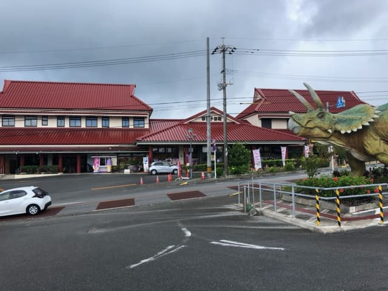
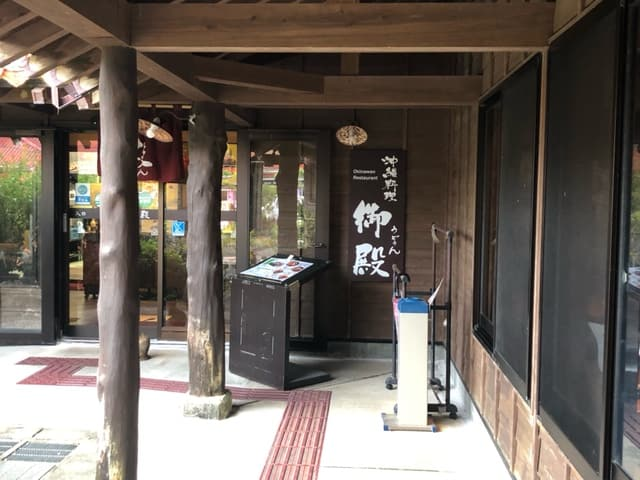
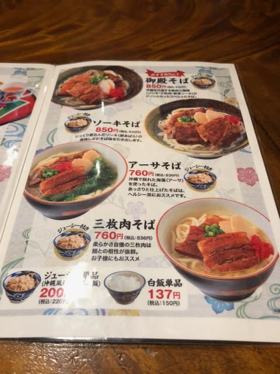
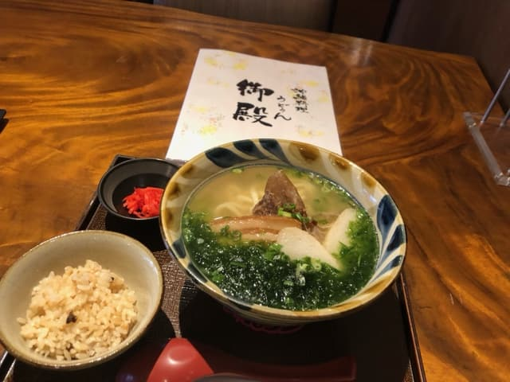

2023年7月去吃了位在名護市、被稱為「沖繩麵街道」的縣道84號線沿線、御菓子御殿對面的「御殿（烏嘟恩）」😄



菜單上寫著和店名同名的「御殿麵」是推薦第1名，但我當時不太想吃得很豐盛，所以點了「石蓴麵」😄

所有的麵類菜單都附有「沖繩炊飯（Jushi）（沖繩風炊飯）」😄
先照慣例喝一口湯品嚐😁 是柴魚為底的高湯，普通好喝。接著把麵和石蓴（海藻）一起吃😄 石蓴帶有海味，很不錯，麵是偏圓的粗麵，口感軟，和其他店不太一樣。麵稍微偏軟。
三層肉和排骨也軟嫩入味，普通好吃。
評分（9分/15分）：我覺得普通好吃，但可惜的是，進店後客人並沒有客滿，有一定的客數，卻沒有人帶位到桌子，店員全都在廚房裡，不像其他店會引導，讓我有點不知所措(^_^;) 總之先坐到空位稍等，但就算他們把其他客人的餐點送到桌上，也完全沒注意到我是新進來的客人(^_^;)
送完其他客人的餐點，就匆匆回廚房去了，可能是人手不足，店員的人數看起來很少。
看不下去，我探頭到廚房點餐，結果對方說「還沒點餐嗎？」，完全沒注意到有新客人進來(^_^;) 我不禁覺得，這樣在被稱為「沖繩麵街道」的縣道84號線上恐怕難以取勝吧？留下了有點遺憾的印象ｗｗ
麵：★★★☆☆（3）
湯頭：★★★☆☆（3）
配料：★★★☆☆（3）